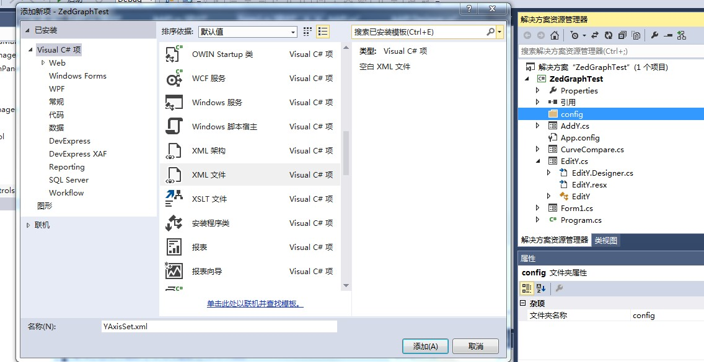
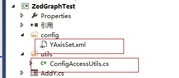
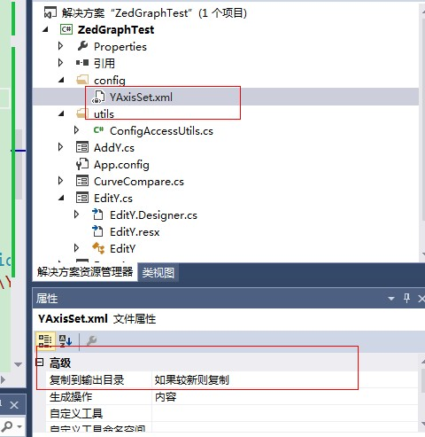
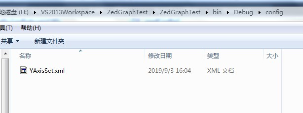

原文出处:本文由博客园博主霸道流氓提供。
原文连接:https://www.cnblogs.com/badaoliumangqizhi/p/11454149.html
原文连接:https://www.cnblogs.com/badaoliumangqizhi/p/11454149.html
场景
在Winform程序中，需要将一些配置项存到配置文件中，这时就需要自定义xml的配置文件格式。并在一些工具类中去获取配置文件的路径并加载其内容。
关注公众号
霸道的程序猿
获取编程相关电子书、教程推送与免费下载。
实现
首先在项目下新建文件夹，命名为config，然后右键添加xml文件。

自定义xml节点内容如下
<?xml version="1.0" encoding="utf-8" ?>
<Configure>
<!--Y轴数量 默认是1-->
<yConut>1</yConut>
<!--Y轴集合-->
<YAxis>
<!--第一条Y轴-->
<YAxi>
<num>1</num>
<title>温度</title>
<color>black</color>
<min>-1500</min>
<max>1500</max>
</YAxi>
<!--第二条Y轴-->
<Yaxi>
<num>2</num>
<title>电压</title>
<color>black</color>
<min>-1500</min>
<max>1500</max>
</Yaxi>
</YAxis>
</Configure>
然后我们在项目下再新建utils包，在此包下新建一个工具类，用于读取配置文件。
可以看到此时在VS中的两个文件的路径是如下关系：

此时需要在下面的工具类中获取到上面配置文件的路径。
注：如果我们在VS中新建目录并添加配置文件，那么在最终项目进行打包时，只有在
bin下的release或者debug存在exe文件，如果需要再读取其他目录的配置文件，就会找不到。
所以需要将配置文件存放在bin下的debug或者release目录下，但是我们在开发时还要能在VS中对其进行配置。
在VS中右击配置文件--高级属性-复制到输出目录-如果较新时则复制，那么在更改时就会自动将其复制到bin下的debug或者release目录。

这样在项目的真实目录下的bin下的debug或者release就会存在。

怎样获取bin下的debug目录或者release目录
//获取可执行文件的路径-即bin目录下的debug或者release目录
string context = System.Windows.Forms.Application.StartupPath;
string path = String.Concat(context,@"\config\YAxisSet.xml");